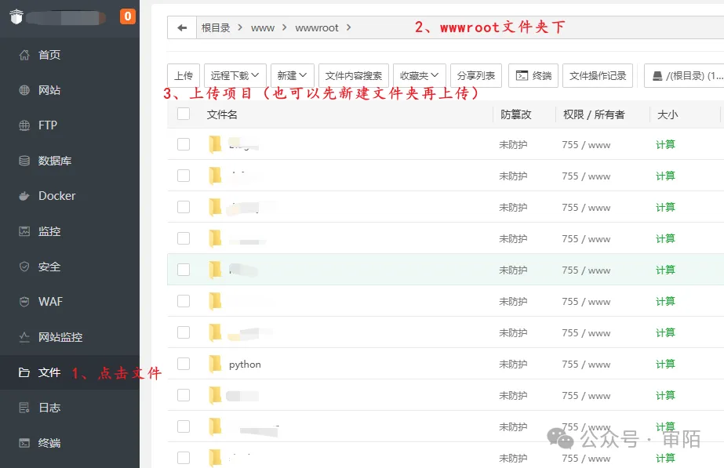
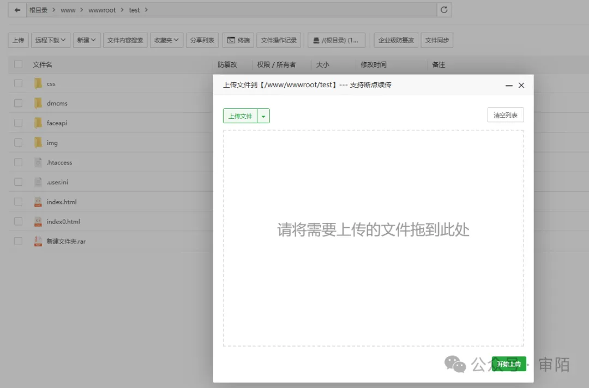

一. 上传文件
 二. 创建网站

- 添加相关信息
- 创建完成后 -> 提交，生成如下页面

- 如果创建时未填写域名，点击进入“域名管理”进行添加，效果如下
- 当网站创建完成，默认使用 http 协议，然而在实际应用中很多场景需要添加 ssl 证书进行加密，也就是常见的 https，怎么办呢？效果如下，点击键入“SSL”，将自己申请的 SSL 证书添加如下位置即可
- 当然此处也可以申请临时 ssl，不过时间有限，安全性一般
- 当域名配置完成，需要开启外网映射（常规情况下默认自动开启）
- 项目中如果需要添加依赖模块，点击进入“模块管理”（如果不是在线修改项目，默认在项目创建初期便自动安装好所需依赖）。
- 开启端口：除了宝塔开启服务端口以外，服务器还需开启对应端口，进入对应的服务器商处，此处以阿里云服务器为例：
综上，一个 Nodejs 项目便创建完成，通过域名便可以进行访问，